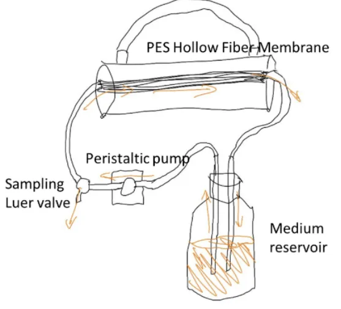
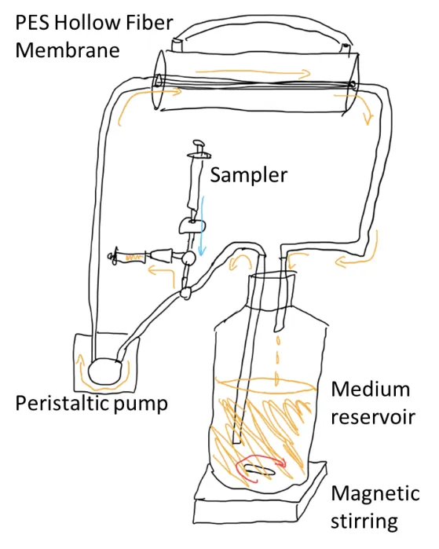
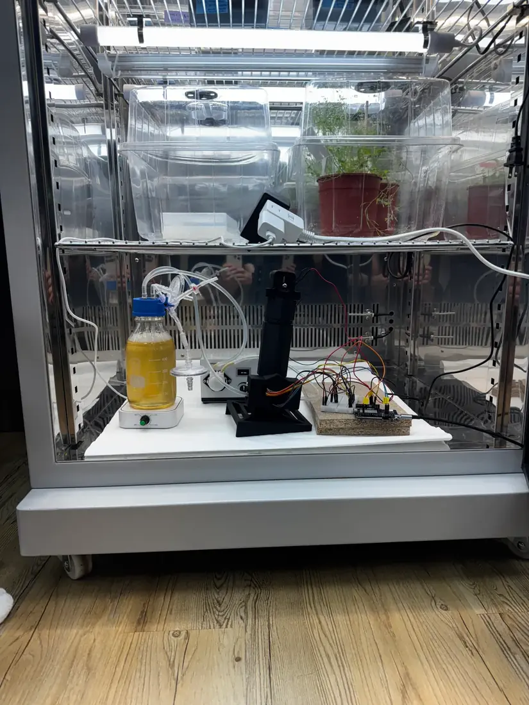
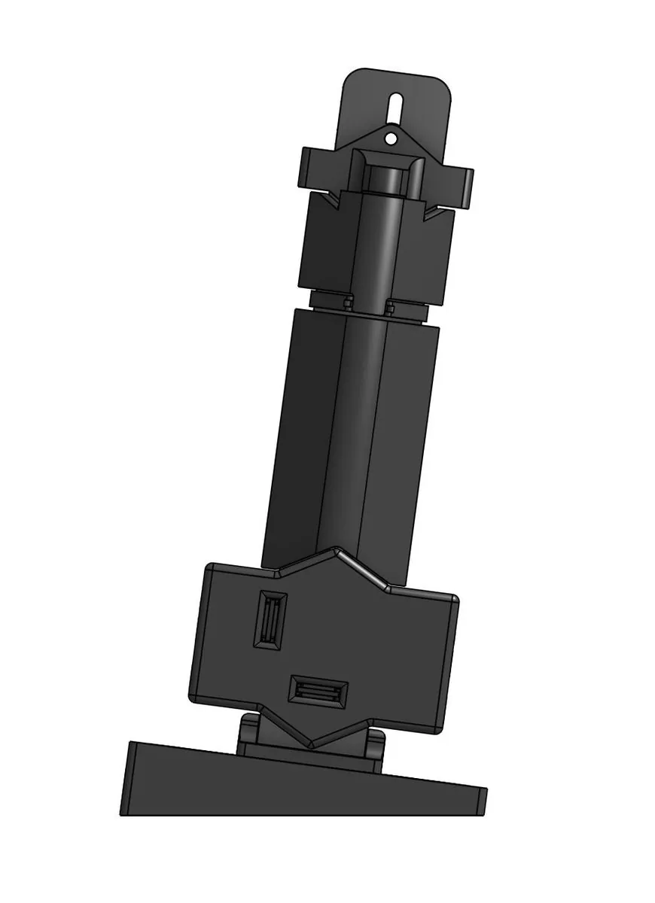
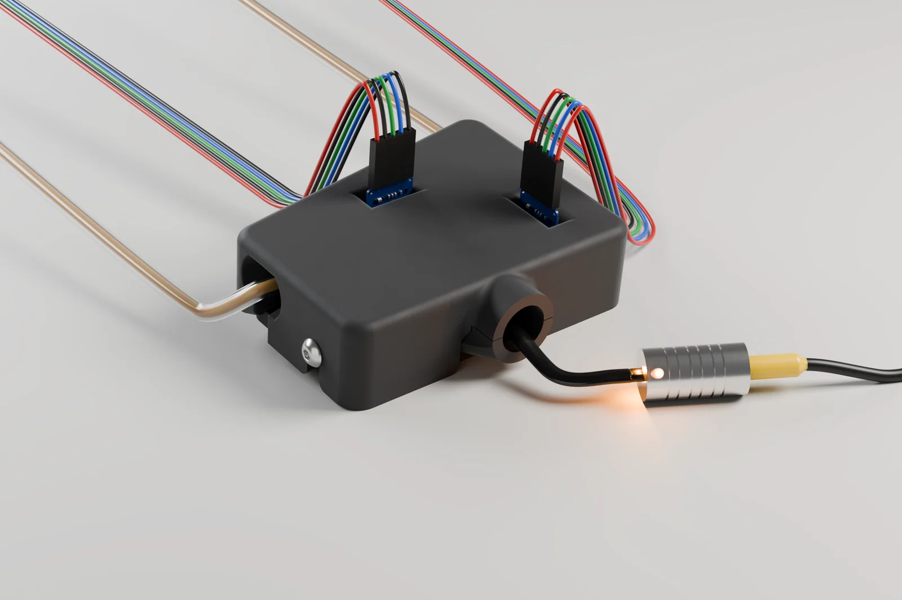

Overview (Final Design)
To monitor growth without opening the bioreactor, we built an in‑line photometer that measures OD600 directly from the flowing culture.
There are two versions. The complex photometer (“Pro”) is used in lab testing and is the subject of most of this page. The simplified photometer (“Slim”, part 5) was tested in early October, too late to integrate, so the complex one remains the bioreactor’s final assembly.
2.1 Wavelength Selection
- Standard for bacterial density. Readings compare directly with the BioDrop and published growth curves.
- Measures turbidity. Cells scatter strongly; the medium absorbs less than at shorter wavelengths.
- Avoids optogenetic cross‑talk. 600 nm sits between the green (~535 nm) and red (~672 nm) response regions of our CcaS/CcaR system.
2.2 Beam Splitting and Reference
The beam splitter sends 90% of the light on through the flow cuvette to the sample sensor and 10% off at 90° to the reference sensor. An LED degrades over long runs; against the reference, the sample sensor only has to measure the bacteria’s scattering. The software does the calculation, keeping the interface simple for a small‑scale farmer.
Bacterial Growth
Growing the culture (part 3) and reading it in line (part 4) meet in the long‑term run (4.5). The bioreactor’s own cycles are on the bioreactor page.
Both prototypes ran on the bioreactor’s membrane loop.
Prototype 2
3.1 Prototype 2 – 22 °C in the Bioreactor Loop: Bacillus subtilis 168
6 June 2026
Design
A continuous‑flow loop: a PES hollow‑fiber membrane (lumen volume ~200 mL), a peristaltic pump, a Luer valve and a 500 mL reservoir holding 300 mL of LB, inoculated with 20 mL of a multi‑overnight B. subtilis culture.
Build


Test
At room temperature the pump held 94 mL/min, but medium leaked at the pump and the trial ended early. Final OD600: 0.304 in the tube, 0.48 in the reservoir. 2 mL of shell‑side medium on LB agar formed no colonies, a single plating (bioreactor page, 6.1).


Learn
Without mixing, we hypothesize, cells settled in the reservoir. Next: a magnetic stirrer, BPT tubing for a durable seal at the pump, and the sampling port at the reservoir’s outlet.
Prototype 3
3.2 Prototype 3 – Culture Bacillus subtilis 168 at 37 °C
14 June 2026
Design
A 200 rpm magnetic stirrer went under the reservoir, and the sampler moved next to it, where a reading better averages the OD of the whole module.

Test
The pump held 94 mL/min throughout. At 37 °C the bioreactor plateaued (OD600 ~0.8–0.9) after 2 hours, the flask control (OD600 ~0.6–0.8) after 4.5 hours.

Learn
The curve supports stirring as the fix for sedimentation. Next: growth at 22 °C (4.5), and higher‑durability BPT tubing against tube degradation.
Complex Photometer Engineering Cycles
The complex photometer’s light path, from the bench to the enclosed build of the long‑term run.
Prototype 1 of 5
4.1 Prototype 1 – Horizontal: the Bench Light Path
Before anything was printed
Design
Magnetic helping hands held our amber 600 nm LED in line with a purchased paralleling lens; a 2 mm slit narrows the parallel light before a beam splitter and two lux sensors.
Build
Everything was locked in place except the lens, so its position was the single variable.

Test
We shifted the lens along the axis until the light steadily lit both sensors, then measured every spacing for the CAD model.
Learn
These spacings fixed the geometry of every later build.
LED tip to lens
5.5 cm
Lens to beam‑splitter center
10 cm
Beam splitter to each sensor
2 cm
Prototype 2 of 5
4.2 Prototype 2 – Horizontal, 3D Printed
Design
The bench layout moved onto a 3D‑printed rail, its optics still adjustable, with the flow cuvette in the culture loop.
Build

Test
Readings fluctuated: bubbles trapped in the horizontal cuvette crossed the light path, and the loose mounts could shift between runs.
Learn
The next design had to let bubbles leave the cell and hold the optics fixed.
Prototype 3 of 5
4.3 Prototype 3 – Vertical
Design
The optical path turned vertical so bubbles would rise out of the beam, with tighter mounts.
Build

Test
Zeroed on growth medium, then 2 mL of titanium dioxide suspension, a stable scattering target.
| Sample | Sample sensor (lx) | Reference sensor (lx) | OD, as logged |
|---|---|---|---|
| Growth medium (blank) | 660 | 92.5 | 0 |
| 2 mL TiO2 suspension | 495 | 92.5 | 62.5 |
The firmware of the time divided the absorbance, 0.125, by the cuvette path entered in meters (0.002 m), so it logged 62.5. On the standard 1 cm path the firmware uses now (8.2), the same reading is 0.62.
The reference held at 92.5 lx, so the drop came from the sample.
Learn
Bubbles could still pause in the cell, and blanking needed standardizing.
Prototype 4 of 5
4.4 Prototype 4 – Angled
Design
The whole photometer tilts on a separate wedge, so no inner surface of the cuvette is horizontal and the optical geometry is unchanged.
Build
The wedge is supported underneath against flex. A dual Luer valve with syringes bleeds gas from the loop before a run.

Test
Zeroed on medium, then 1 mL and 2 mL TiO2 through the same cell.
| Sample | Sample sensor (lx) | Reference sensor (lx) | OD, as logged |
|---|---|---|---|
| Growth medium (blank) | 137.63 | 17.23 | 0 |
| 1 mL TiO2 suspension | 120.44 | 18.33 | 0.3712 |
| 2 mL TiO2 suspension | 111.62 | 18.33 | 0.5785 |
OD as logged by the firmware of the time, before blanking was standardized (8.2).
Learn
The two concentrations separated cleanly, but doubling the TiO2 moved the reading by a factor of 1.56, which this data alone cannot explain.
The reference shifted 6.4% between blank and samples, though its beam is split off before the sample: the source drifted, or room light reached the open path (early prototypes were tested with the room lights off). Next: the light path enclosed, direct LED control, both channels live, and real culture in the loop.
Prototype 5 of 5
4.5 Prototype 5 – Long‑Term Monitoring
The final photometer on a growing culture
Where the two tracks come together: the enclosed photometer reading a growing culture in line.
Design
The optics are fixed in their default positions, TPU lines the mounts where they touch glass, and snap‑in covers enclose the light path.
Build
An Arduino Uno Q runs it, with a live web dashboard on the local network.


Test
The photometer monitored Bacillus subtilis 168 at 22 °C for more than 400 hours, in line from the bioreactor loop, with no sample removed.

| Elapsed | Points | OD600 | Sample (lx) | Reference (lx) | Ratio | Rejected |
|---|---|---|---|---|---|---|
| 3 d 7 h 57 m | 586 | 0.7661 | 171.67 | 26.67 | 6.44× | 42.9% |
| 6 d 20 h 58 m | 1,097 | 0.7683 | 171.49 | 26.67 | 6.43× | 14.3% |
| 7 d 21 h 28 m | 1,244 | 1.1804 | 141.85 | 26.67 | 5.32× | 0% |
Late in the run the trace dropped sharply: the recirculation pump had failed, and was replaced the same evening (notebook, week 22). OD alone cannot separate lysis from sporulation or settling, so the curve is reported as observed.
Learn
One unbroken series from lag phase onward, which manual sampling cannot produce. The limits:
- Noise is tight below about 0.4 OD and ragged above about 0.8.
- The rejection rate moved from 42.9% to 14.3% to 0%, so it is not cumulative; its window is not yet on record.
- The ratio measured 5.3× to 6.4× against an expected 10:1, so either the split ratio or the expectation is wrong.
Simplified Photometer
5.1 Rationale
The beam splitter, the paralleling lens and the flow cuvette account for nearly all of the complex photometer’s cost. Optical fibers replace the lens and the splitter: they carry the light in parallel paths and split it 1:1 between the sample and reference sensors (9:1 in the complex build). The result is more than two‑thirds smaller.
Design Changes
-
 Stays
Flow cuvette
Stays
Flow cuvette
Essential for continuous in‑line measurement.
-
 Removed
Beam splitter
Removed
Beam splitter
The fibers split the light 1:1 between the sample and reference sensors.
-
 Removed
Paralleling lens
Removed
Paralleling lens
The fibers carry the light in parallel paths, so neither the lens nor the long light‑traveling region is needed.
Calibration
6.1 TiO₂ Calibration — Complex Photometer
A growing culture changes while it is measured, so no two instruments read quite the same sample; an inert mineral suspension added in weighed steps gives a ground truth independent of both. The iGEM protocol specifies silica, but TiO2 was on the shelf and behaved almost identically in 1% SDS.
Across two runs the raw, uncalibrated output tracked the BioDrop to a median paired difference of 3.8%, both instruments regressing against TiO2 mass at R² > 0.999. No correction transform has been applied since. The run said nothing above OD 1.9, or about the simplified build; the silica run covers both.


The two TiO2 runs in fullmethod, exclusions, Test 1
TiO2 in 500 mL of 1% SDS, against a BioDrop cuvette spectrophotometer, run twice. Test 1 added 1 mg at a time for 40 points; Test 2 added 1 mg at a time to 10 mg, then 5 mg at a time to 60 mg. The loop: a magnetic stirrer, a peristaltic pump, our photometer and a 500 mL reservoir whose cap had an inlet, an outlet, a sampling port and an air hole.
Two single‑point exclusions, shown as open markers: the 37 mg BioDrop reading in Test 1 (off its neighbors’ trend) and the 5 mg one in Test 2 (above the readings on both sides). In both, the paired ReLEAF reading is on trend, which puts the error in the reference.
The raw Test 2 points scatter RMSE = 0.011 OD600 (R² = 0.9997) about the line of identity. Against TiO2 mass the raw output scatters about as much as the BioDrop (Test 1, 2–40 mg: 0.030 against 0.031 OD600), so fitting our readings to the BioDrop would only tie them to its error.
6.2 SiO₂ Calibration — Complex Photometer
On 10 October, silica (the iGEM calibration standard) was added to 500 mL of 1% SDS in 2.5 mg steps from 2.5 to 100 mg, forty points, stirred and circulated through the same loop. Every step was read on the BioDrop, the complex photometer and the simplified photometer (Prototype 2, part 5), the first run to put all three on one series.
Where the reference runs out
The BioDrop’s direct channel climbs to about OD 2.3, then from 70 mg returns exactly 2.50 at every point: a ceiling. Past it we read dilutions (two-fold from 22.5 mg, four-fold from 50 mg) and multiplied back, so every BioDrop value above OD 2.5 is reconstructed. From 22.5 to 50 mg the direct and two-fold readings disagree by up to 14% (35 mg: 1.536 against 1.326); above 50 mg the corrected BioDrop falls as silica is added at 7 of 20 steps, worst by 0.34 OD at 80 mg, which a weighed inert standard cannot do. Above OD 2.5 the BioDrop is a noisy estimate.
The complex photometer against the reference
| Range | Slope | Intercept | R² | Mean difference |
|---|---|---|---|---|
| OD 0–1.0 | 1.001 | −0.123 | 0.988 | −0.12 |
| OD 0–2.5 | 0.995 | −0.074 | 0.982 | −0.08 |
| OD above 2.5 | 0.594 | +0.944 | 0.796 | −0.33 |
Up to OD 2.5 the complex photometer reads absolute OD600: the slope of 0.995 is, in practice, one-to-one, with no transform. Above it the photometer reads about 0.33 OD low.
Whose error is it, above OD 2.5?
Over 50–100 mg, against the weighed silica mass:
| Instrument | R² vs mass | Residual scatter | Steps that decrease |
|---|---|---|---|
| Complex photometer | 0.990 | 0.035 OD | 0 of 20 |
| Simplified photometer | 0.993 | 0.007 OD | 1 of 20 |
| BioDrop, reconstructed | 0.878 | 0.165 OD | 7 of 20 |
The complex photometer scatters five times less than the reconstructed BioDrop and never reads lower as silica is added, so part of the gap above OD 2.5 is the reference’s dilution; part is expected compression at high turbidity. Weighing the two needs a reference that does not saturate at 2.5. Above it the photometer stays monotonic and linear, an index of density.
Resolution
Each series’ point‑to‑point scatter, divided by how far its reading moves per milligram of silica, gives the smallest difference it can resolve:
| Instrument | Noise | Low range | High range |
|---|---|---|---|
| Complex photometer | 0.010 OD | 0.21 mg | 0.46 mg |
| Simplified photometer | 0.004 OD | 0.49 mg | 0.78 mg |
| BioDrop | 0.106 OD | 2.20 mg | 3.60 mg |
The complex photometer resolves a change about ten times smaller than the BioDrop. The BioDrop is the better instrument, here reading one hand‑pipetted cuvette per point; this table compares repeatability.
6.3 SiO₂ Comparison — Simplified vs. Complex vs. BioDrop
The same series, on the simplified photometer. It is linear across the entire range: R² = 0.992 against silica mass, against the complex build’s 0.974, reversing direction only once in 39 steps, by 0.013 OD.
With R² = 0.993 between them, one constant converts it: OD = 5.573 × r − 0.073. Rescaled, its mean difference from the BioDrop below OD 2.5 is −0.10, near enough the complex build’s. But the factor is a 5.6‑fold compression: the simplified reading moves only from 0.03 to 0.60, the complex one from 0.05 to 3.17. Quieter scatter does not pay for the lost span, so it resolves a change about twice as coarse. The team expects the compressed scale to give a range about five times wider than the BioDrop’s, not yet tested above the top of this series.
| Complex | Simplified | |
|---|---|---|
| Optical path | Dual beam: lens, splitter, sample and reference sensors | Fiber‑coupled LED, split 1:1 to sample and reference sensors; no lens or splitter |
| Reads OD600 directly | Yes, to OD 2.5 | No — needs a 5.57× factor |
| Agreement with BioDrop, OD ≤ 2.5 | −0.08 OD | −0.10 OD |
| Linearity vs mass, full range | R² 0.974 | R² 0.992 |
| Resolution, low range | 0.21 mg | 0.49 mg |
| Corrects for LED drift | Yes, reference beam | Designed to, through its reference fiber; not yet tested on a long run |
Its reference sensor is fed by a 1:1 fiber split (5.1); whether that corrects LED drift as well as the complex build’s has not been tested on a long run.
For both builds, the 5.57× factor and the OD 2.5 limit come from a single run on one scattering standard. Silica and bacteria do not scatter identically, so before either build is trusted quantitatively on culture, the series needs repeating against B. subtilis at known cell densities.
Final Designs & Specifications
7.1 Which Version Should Someone Use?
- Use the complex photometer for a bioreactor run.
- It reads OD600 directly, resolves twice as finely, and its reference beam keeps a slow drift in the LED from being recorded as growth over hundreds of hours.
- Use the simplified photometer where cost and size decide.
- A teaching lab, a replicate vessel, or anywhere a second instrument is better than none: it is smaller, cheaper and has fewer parts, but needs its scale factor (6.3).
7.2 Complex Photometer
- Measures
- OD600, in line and continuously, with no sample drawn
- Light source
- 600 nm LED at 5 V, switched from pin D3
- Beam split
- 90 : 10, reference taken before the sample
- Flow cuvette
- 2 mm path, in the culture loop
- Sensors
- 2× GY‑302 lux sensors at 3.3 V on one I²C bus
- Controller
- Arduino Uno Q, runs with no computer attached
- Filtering
- 16‑reading bursts, first 2 dropped; median ± 3·MAD, then two bubble gates (8.1)
- Orientation
- Tilted 10° to clear bubbles
- Working range
- Reads OD600 directly up to OD 2.5 (SiO2, 6.2)
- Longest run
- More than 400 hours
Its mechanical design follows (7.2.1–7.2.4).
7.2.1 Design Requirements
Bubble‑free light path
No bubbles held in the beam.
Blocked from ambient light
Both sensors shielded from room light.
Repeatable optical alignment
The optics return to the same positions at every assembly.
7.2.2 Assembly & Fit
Snap‑on covers. An indentation along the body lets the covers snap on and off (parts 4–6).
Base and body printed apart. One diagonal piece would need heavy support, costing accuracy, so the base joins the body at a diagonal insertion point (parts 1 and 2).
Two filaments for a tight fit. Rigid PLA for the structure; the loose splitter, lens and sensor seats are lined with high‑friction TPU, which holds the parts without damaging them.
7.2.3 Bubble Management

Tilted 10°, the cuvette gives bubbles a continuous upward path: almost all left within a quarter of a second.
7.2.4 Optical Layout
- LED housing 38 mm
Holds the 600 nm LED securely.
- Light‑traveling region 117 mm
Maintains the spacing between the LED, lens, and measurement region.
- Sensor region 62 mm
Contains the slit, beam splitter, flow cuvette, and two light sensors.
7.3 Simplified Photometer

- Optical path
- Optical fibers; no paralleling lens, no beam splitter, no long light‑traveling region
- Reference
- A reference sensor fed by a 1:1 fiber split (5.1)
- Size
- More than two‑thirds smaller
- Cost
- Lower
- Linearity
- R² 0.992 against SiO2 mass, full range (6.3)
- Scale
- Needs a 5.57× factor to read OD600 (6.3)
- Resolution
- 0.49 mg SiO2 at the low end, against 0.21 mg for the complex build (6.3)
Software
8.1 Data Acquisition and Filtering
-
Take a burst of 14 readings
The LED switches on and each sensor takes 16 lux readings; the first two are dropped while the LED settles.
-
Find the median
One or two readings jumped by a bubble barely move the median.
-
Measure the spread
The median absolute deviation (MAD).
-
Reject outliers
Readings beyond median ± 3·MAD are rejected. The rejection percentage is reported live; above 50% the dashboard shows it in red and asks the user to clear bubbles in the bioreactor.

Testing the filter on silica (10 October)
During the 4.5‑hour silica run (6.2, 1 µm microspheres) we logged eight estimators from the same 14 readings. In clean flow they differed by at most 0.004 OD. Under bubbles the five symmetric ones (MAD, Qn, biweight, mean, median) stayed within 0.02 OD of each other on the complex build and 0.006 OD on the simplified one; the three bright‑end ones (upper, p75, p90) moved away, since in a turbid culture air lets more light through. We kept MAD.
A bubble that fills the cell for seconds makes every reading wrong and in agreement. The MAD filter caught 94% of partial disturbances and none of these: once the complex photometer reported 0.79 OD for 6 minutes while the actual value was 3.18. So two gates follow the filter:
Gate 1: the burst against itself
If the MAD result and an upper‑percentile estimate of the same 14 readings differ by more than 0.03 OD, the reading is rejected. On the 10 October run this flagged 97% of disturbed readings and rejected no clean ones.
Gate 2: the reading against the recent past
A reading more than 0.05 OD or 5% from the last accepted value is held back until 3 consecutive readings agree with it; a growing culture does not move 0.05 OD in 30 minutes. The cost is a few minutes’ delay.
8.2 OD600 Calculation
A blank on the growth medium gives K, the sample‑to‑reference ratio with no bacteria:
During the run, each filtered pair converts to OD600 as:
S and R are the sample and reference readings in lux. The 5 is 10 mm ÷ 2 mm, scaling the absorbance across the 2 mm cuvette to the standard 1 cm path. The dashboard snapshots in 4.5 reproduce this formula to within 0.0003 OD.
Electronics
9.1 Control Architecture
Both versions use a soldered PCB on an Arduino Uno Q, which runs from a power supply alone, with no computer attached.
One shared ground. Sensor, LED and transistor grounds are joined.
A transistor for the LED. The LED on the collector; pin D3 drives the base through 1.2 kΩ, with 10 kΩ from base to emitter.
Two sensors on one bus. Both GY‑302 sensors share SDA and SCL at separate addresses.
Two supply voltages. 5 V for the LED, 3.3 V for the sensors.
Six connections to the Arduino: SCL, SDA, D3, 3.3 V, 5 V and ground.
Future Implications & Limitations
10.1 Limitations
Single‑Wavelength Measurement
It measures only at 600 nm, so it cannot replace a spectrophotometer for broader wavelength analysis.
Manual LED Alignment
We did not test several LED clip designs, so the LED does not always point straight when seated; during assembly it is rotated in the clip until the light reaches the sensors.

The LED in its clip

The LED mount (printed part 8, 11.2)
10.2 Future Implications
At an estimated $150, against about $15,000 for the BioDrop, it could bring continuous OD600 monitoring without manual sampling to student labs and smaller facilities. Next: easier alignment, simpler assembly, validation in long‑term operation, and wavelengths beyond OD600.
Reproduction
11.1 Materials List & Cost
The bill of materials, itemized to the component. The pictures are the parts’ CAD models.
Bill of materials18 parts, 3 groups
| Component | Specification | Unit cost (USD) | Total cost (USD) |
|---|---|---|---|
| Light path in the order the light meets it, as in the optical path | |||
| 1× 600 nm, 5 V, no internal resistors | — | — | |
| Paralleling lens |
— | — | |
| Beam splitter |
90 : 10 split (2.2) | — | — |
| Flow cuvette |
— | — | |
 Lux sensor Lux sensor |
2× GY‑302 | — | — |
| Electronics wired as in the wiring diagram | |||
| Microcontroller | 1× Arduino Uno Q | — | — |
| PCB | 2 × 8 cm | — | — |
| Transistor | 1× UTC PN2222 | — | — |
| Resistors |
|
— | — |
| Wires |
|
— | — |
| Heat shrink | 2× 2.0 × 45 mm heat‑shrink tube | — | — |
| 2510 connectors |
|
— | — |
| DuPont connections |
|
— | — |
| Male header pins | 10× bent male header pins (all connected together) | — | — |
| Body and assembly the eight printed parts are in 11.2 | |||
 Filament Filament |
Black PLA and black TPU (soft) | — | — |
| Fasteners and solder |
|
— | — |
| Total sum cost | — | ||
11.2 Design Files
The eight printed parts, numbered as in the exploded drawing in 7.2.
The eight STLsone per printed part
- 1Base
Structural support that angles the photometer for efficient bubble travel.

- 2Body
Body structure of the photometer that all components attach to.

- 3Sensor frame
Structure that holds the beam splitter and both sensors.

- 4Sensor frame cover
Cover that blocks external light from hitting the sensors.

- 5Body cover
Cover that blocks external light along the light path.

- 6Body cover, small
Cover that blocks external light along the light path.

- 7Lens holder
Holder for the paralleling lens, for a parallel light path.

- 8LED mount
Structure that holds the LED.
11.3 Print Settings
Print settings7 rows
From the slicer project in the doc’s assembly guide (Bambu Studio).
- Printer
- Bambu Lab X1 Carbon, 0.4 mm nozzle, textured PEI plate
- Profile
- 0.20 mm Standard @BBL X1C
- Layer height
- 0.2 mm, first layer 0.2 mm
- Sparse infill
- 20% gyroid
- Supports
- On: normal (auto), 30° threshold
- Top surface
- Line width 0.25 mm
- Filaments
- PLA Matte, TPU 95A and PETG-CF, on three plates. The guide prints plate 1 (the lens holder and sensor frame) in PETG, CF optional, and paints TPU onto its seats.